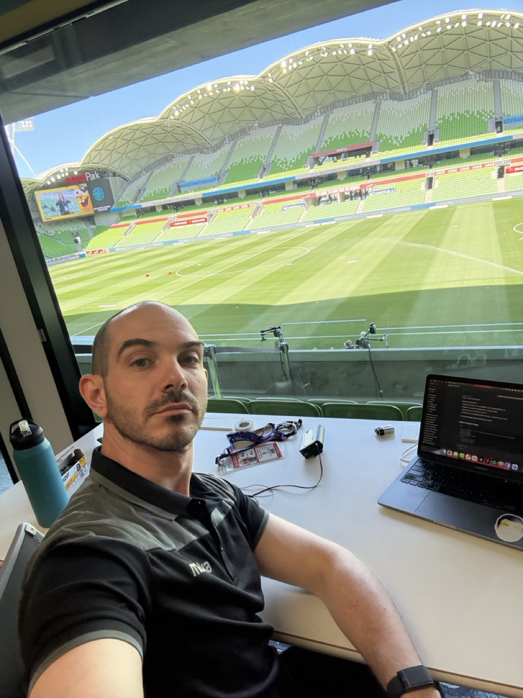

Melbourne · Product · Design · Football
15 years leading product and design across startups, scale-ups, and enterprise. Co-founder. Startup mentor. National-level football coach. Obsessed with the human conditions that make great work possible.

How I think
People are the ones doing the work. Not frameworks, not roadmaps, not processes. So when I walk into a team, the first thing I look at is the humans in the room. How they are feeling, what is blocking them, what they are afraid to say out loud. Get that right and the work follows. Skip it and you are just rearranging deck chairs. I learned that pitchside coaching match officials through the hardest decisions in football, and I have never stopped applying it.
The work
From a two-person startup to a national university. From a mental performance app to elite football officiating. The context changes. The approach does not.
The other job
For almost a decade I have been coaching match officials for Football Australia. The people who make the hardest decisions in sport, in real time, under pressure, in front of thousands of people who want them to fail.
I have coached five national finals including the A-League Men and Women final series, the 2024 Australia Cup Final, and the 2025 Australian Championship Grand Final. Three of my officials have reached the A-League panels. One was named to the FIFA panel in 2024.
This is not a hobby. It is where I do my most honest leadership work, helping people perform under conditions that do not forgive mistakes, using the same coaching philosophy I bring to every product team.
Let's talk
Whether you are hiring, building a team, or just curious, I am always up for an honest conversation.
Melbourne, VIC · ale.arbizzani@gmail.com · 0452 574 727